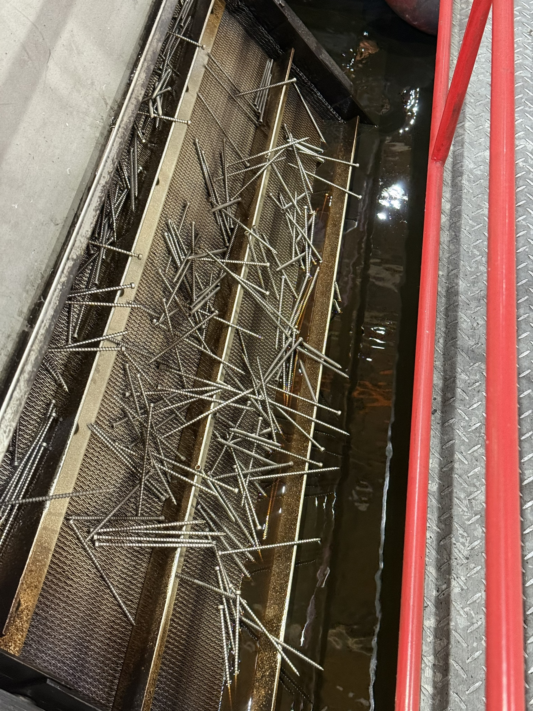
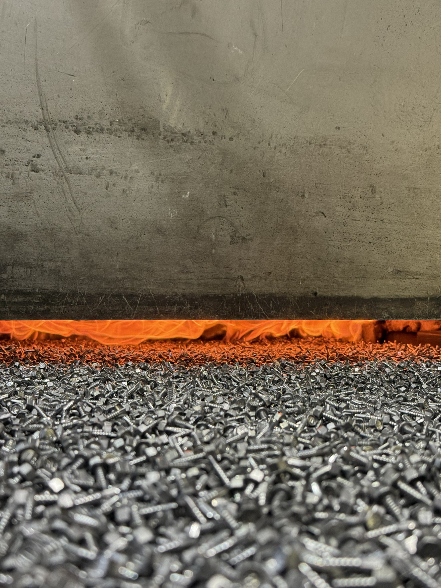
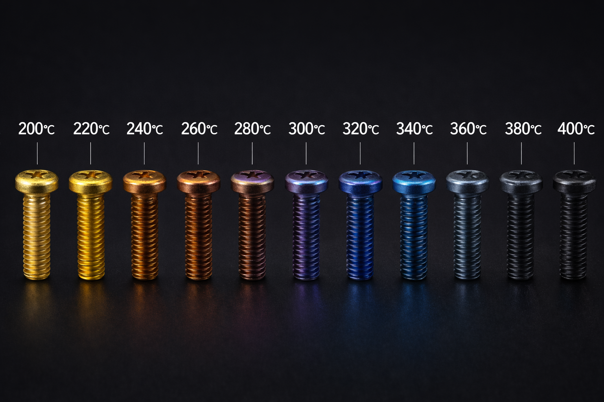

淬火（Quenching）
透過加熱至奧氏體區後快速冷卻，使材料形成高硬度組織，提升表面硬度與耐磨性，適用於需承受高負荷之扣件產品。

透過加熱至奧氏體區後快速冷卻，使材料形成高硬度組織，提升表面硬度與耐磨性，適用於需承受高負荷之扣件產品。

於高溫下導入碳源，使工件表層碳含量提升，經淬火後形成高硬度表層與韌性心部，兼顧強度與耐衝擊性，廣泛應用於高強度螺絲與機械零件。

結合淬火與回火製程，調整材料強度與韌性平衡，使工件具備良好的機械性能與穩定性，適用於結構用與高強度扣件。

於淬火後進行再加熱處理，降低內應力與脆性，並依溫度控制最終硬度與韌性，確保產品具備穩定且一致的機械性質。